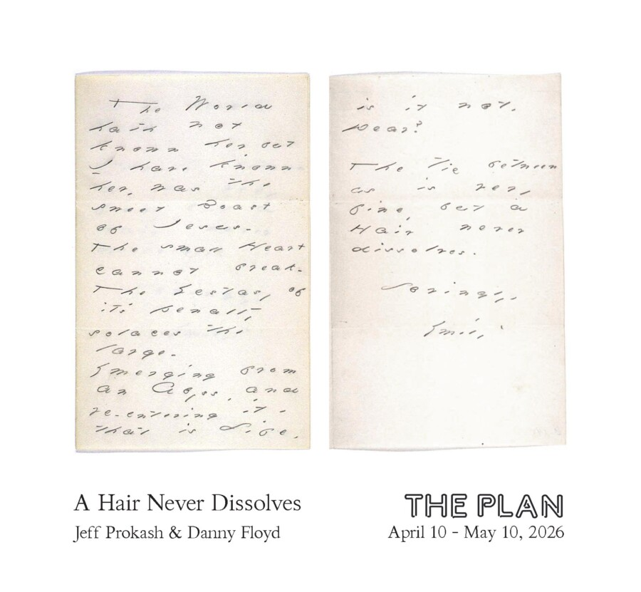

A Hair Never Dissolves
The PLAN is pleased to announce the opening of “A Hair Never Dissolves”, a two person exhibition by Danny Floyd and Jeff Prokash.
Through the site-specific installation of three-dimensional text and large-scale photography, Danny and Jeff both create work that is centered around the written word. Their art reflects on our poetic relationships with language and with words as living objects.
From the Exhibition Statement:
The World hath not known her, but
I have known her, was the sweet Boast of Jesus –
The small Heart cannot break –
The Ecstasy of it’s penalty solaces the large –
Emerging from an Abyss, and reentering it ‘ that is Life, is it not,